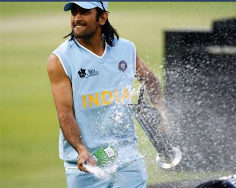
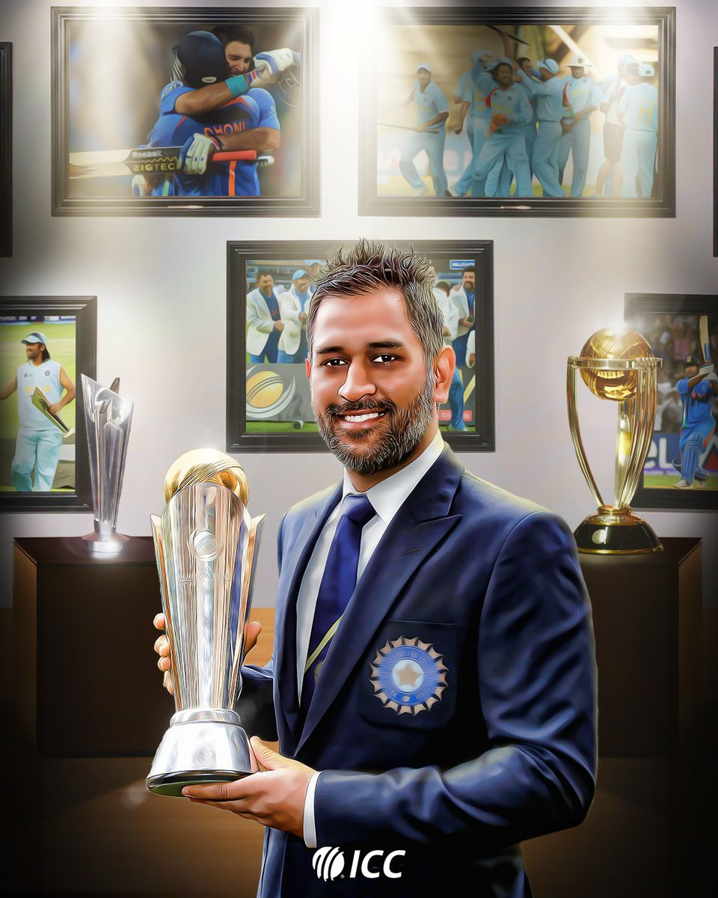

jersey no.
>>>>07<<<<< /h2>
👉👉👉 He is the first cricketer to be a winning captain of all three major ICC trophies, as under his
captaincy, India won the 2007 ICC World Twenty20, the 2011 Cricket World Cup, and the 2013 ICC Champions
Trophy, the most by any captain.
The trophies
as a captain
2007 ICC World Twenty20 
2011 Cricket World Cup

2013 ICC Champions Trophy 
👉👉He also led India to victory in the 2010 and 2016 Asia Cup.